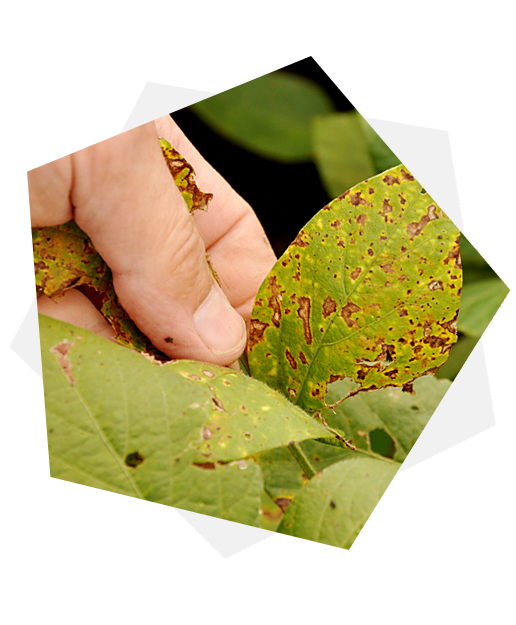

<!-- HERO -->
<section class="banner-area py-7">
  <!-- Content -->
  <div class="container">
    <div class="row align-items-center">
      <div class="col-md-12 col-lg-7 text-center text-lg-left">
        <div class="main-banner">
          <!-- Heading -->
          <h5 class="display-4 mb-4 font-weight-normal" style="font-size: 44px;">
            Crop Disorder Detection using Hybrid Model based on Image Processing and Ontology Engineering
          </h5>

          <!-- Subheading -->
          <p class="lead mb-4" style="text-align: justify; padding-right: 10px">
            In the agricultural domain, crop diseases are a huge problem for yield production. If the farmers
            or any other stakeholders who are engaging in crop cultivation, can recognize the diseases of
            their cultivating crops without the expert knowledge themselves, that will provide huge benefits
            and can take quick actions on that matter to prevent future damages and losses. Therefore,
            having a quicker and easy way to detect crop diseases is a necessity.
          </p>

          <!-- Button -->
          <p class="mb-0">
            <a routerLink="/detect-disorder" class="mx-2 btn btn-primary btn-circled">
              Detect Disorder
            </a>
            <a routerLink="/ontology" class="mx-2 btn btn-primary btn-circled">
              Ontology
            </a>
          </p>
        </div>
      </div>

      <div class="col-lg-5 d-none d-lg-block">
        <div class="banner-img-block">
          
        </div>
      </div>
    </div>
    <!-- / .row -->
  </div>
  <!-- / .container -->
</section>
